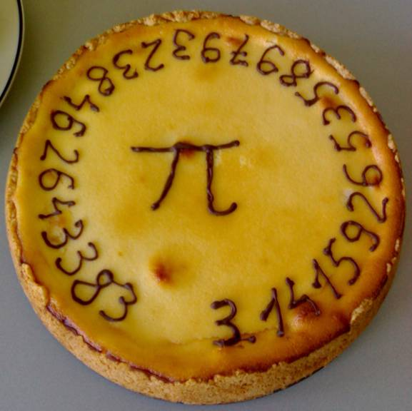
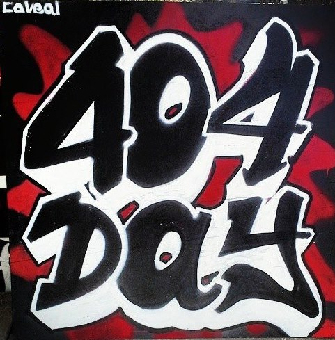

עירא אברמוב, ספקנים בפאב 06.2014
(במקור פסטיבל עולמות 2014)
skeptic@ira.abramov.org
המון עזרה באיסוף מידע: שרון גור
חנוכה
ט"ו בשבט
פורים
רגלים כחגים חקלאיים שהפכו לחגים דתיים
יום האשה
יום האם
יום כדור הארץ
יום מעשים טובים
יום הפועלים
2 - יום המד"ב
13 - Skeptics day
21 - יום החיבוקים
28 - יום פרטיות המידע
22 - יום החשיבה הבינלאומי
28 - Public Sleeping Day
28 - יום המחלות הנדירות
8 - יום האשה (1909)
12 - יום ללא עישון
14 - π Day (1988) 
15 - יום נגד אלימות משטרתית
16 - יום חופש המידע
20 - יום האושר הבינלאומי
21 - יום המאבק בגזענות, יום היערות הבינלאומי (משתנה)
26 - Create Your Own Holiday Day
1 - יום האתאיסטים, יום באטמן
3 - Fish Fingers and Custard Day
4 - 404 Day, Anti Internet Censorship (2014) 
7 - יום הבירה
15 - יום האופניים
20 - 420 Day. Cannabis and CounterCulture in general
22 - יום כדור הארץ
25 - יום הדנ"א, המלריה, חבק שרברב
2 - No Pants Day
3 - Freedom of the Press Day
4 - Star Wars Day
5 - Geek Pride Day (2006)
8 - No Socks Day
9 - Lost Sock Memorial Day
22 - Bio Diversity Day
25 - Towel Day (2001)
14 - יום תורמי הדם
18 - יום הסושי
28 - τ Day
6 - Take Your Webmaster To Lunch Day
7 - יום השוקולד
8 - Transgenders' Day
14 - Town Crier Day
13 - Embrace Your Geekness Day
3 - יום החרדל, האבטיח, הידידות
5 - Underwear Day
6 - Fresh Breath Day
9 - Book Lovers Day
13 - יום השמאליים
26 - יום שוויון האשה, יום הכלב
28 - Software Freedom Day (2004), Bow Tie Day
9 - Wonderful Weirdos Day
19 - Talk Like a Pirate Day (1995)
22 - Hobbit Day, White Chocolate Day
23 - Celebrate Bisexuality (1999)
25 - Comic Book Day
26 - Hug a Vegetarian Day
29 - International Coffee Day
3 - Virus Appreciation Day
15 - Ada Lovelace Day, Information Overload Day
22 - cAPS lOCK dAY
29 - Internet Day
29 - Cat Day
30 - Create A Great Funeral Day
1 - יום הטבעוני
11 - Origami Day
12 - Pizza With The Works Except Anchovies Day
23 - Fibonacci Day
10 - יום זכויות האדם
15 - Cat Herders Day
23 - Festivus (1966, 1997)
2/1 ראש השנה לחתול
22/1 יום תשובות לחתול
3/3 What If Cats and Dogs Had Opposable Thumbs Day
4/6 יום חבק את החתול
29/10 יום החתול
(כל אלו ועוד באתרים DaysOfTheYear.com, HolidayInsights.com)
13 לינואר, 13 באוקטובר, שישי ה13 הראשון בשנה?
Carl Sagan Day - November 9
רעיונות: יום הומאופתיה 10/23, Boobquake?
בחרו נושא ששם דגש על שיתוף אחרים
חג של העיר, השכונה? בית הספר? רק המשפחה?
יותר אנשים = אפשר להרים חגיגות יותר גדולות!
טופס תכנון חג
נושא מספיק כללי כדי שמה שיותר אנשים יוכלו להתחבר אליו
בחרו תמה חיובית ולא ציון נגד משהו
בחרו בקפידה ערכים של החג
טקסים, מנהגים, תלבושות, החלפת אוואטר.
משהו שקשור ליצירה והשתתפות עצמית - כתיבה? ציור?
נושא שמערב שינוי קצב או כיוון בחיים
נושא שקשור למשהו כייפי
אורות, ציור על ביצים, פיסול דלעות...
מוזיקה תואמת, המנון, שירי חג, Filk
מאכל מסורתי - רציני או בצחוק
קישוטים מיוחדים, כרטיסי ברכה, נאומים, סיפורים, מתנות
Internet! (Social Media, Blogs...)
חג מקומי? שלטים בשכונה, פניה לועד המקומי
להפעיל אחרים בצורות מחתרתיות - פלאש מוב
לגרום איכשהוא לסבריטאי לדבר על זה...
עירא אברמוב, ספקנים בפאב 2014
skeptic@ira.abramov.org